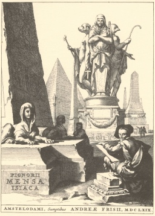

Sacred Texts Esoteric
Buy this Book at Amazon.com
|  | The Isiac Tablet of Cardinal Bemboby W. Wynn Westcott[1887] |
The Bembine tablet, or the Mensa Isiaca is a bronze tablet with silver and enamel inlay, probably of 1st Century Roman origin. Although it depicts Egyptian themes, it is not Egyptian in origin. In the 17th century, Athanasius Kircher attempted to interpret it as a key to the Egyptian hieroglyphics, unsuccessfully. Occultists have long sought esoteric meaning in the tablet: Westcott, Eliphas Levi, and Manly P. Hall all believed that it was the key to the Tarot. The tablet is currently on display in the Museum of Antiquities in Turin.